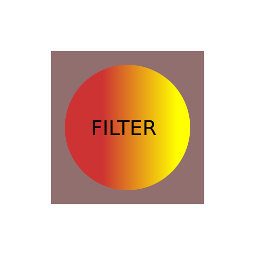
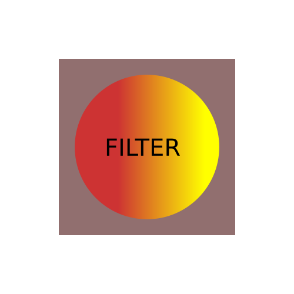
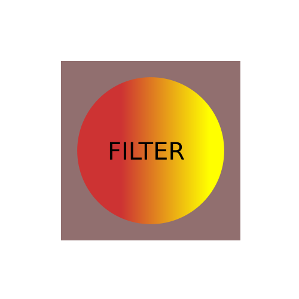
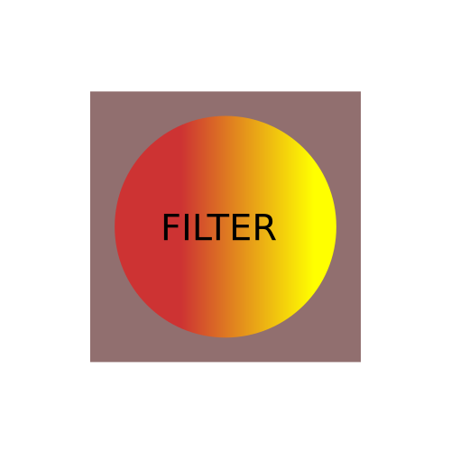
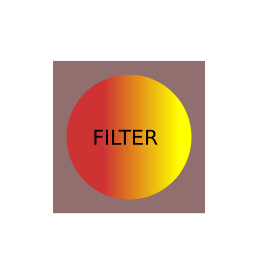
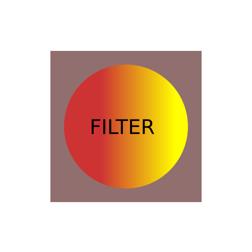

Les 9
SVG Filters
Je kunt met SVG erg krachtige filters gebruiken.
De filters zijn een aantal bewerkingen op PIXEL niveau.
PAS OP! Gebruik je een filter, dan gaat deze uit van de grootte in pixels van je SVG.
Als je deze numeriek aangeeft en toch de SVG uitvergroot, kan een en ander de toch blokkerig worden.
Filters worden net als gradients en patterns gedefinieerd in de defs-tag.
Ze renderen met hardware ondersteuning erg snel, maar bij complexe filters en een grote SVG, kan het je
performance bij updaten van de SVG (dus bij animatie) wel erg vetragen.
Opbouw van een filter
SVG filters zijn effecten die je toepast op delen van graphics van de SVG.
Een filter effect bestaat uit een aantal grafisch operaties, die op de bron worden toegepast om hem aan te passen in bitmapformaat.
Filter effects maak je met filter elementen je geeft een filter een id en zet hem in defs.
Het filter attribuut wordt dan op een onderdeel van de SVG gezet (ongeveer zoals een class in HTML)
Ieder filter element doet een enkele grafische basis-operatie (zoals een Gaussian blur of een belichtings effect of een convolutiebewerking).
Hierbij krijgt een filter element een of meer inputs (bitmaps) die geproduceerd kunnen zijn door andere filter elementen.
Zo maak je een ketting van basis-bewerkingen, die kan leiden tot bijzondere resultaten.
Bij een normale filter wordt de basis-input (de source) een aantal keer gebruikt en worden de resultaten van verschillende bewerkingen samengesteld door het Composite element
| Name | Element | SVG Basic |
|---|---|---|
| Blend |
feBlend | Yes |
| Color matrix |
feColorMatrix | Yes |
| Component transfer |
feComponentTransfer | Yes |
| Composite |
feComposite | Yes |
| Convolve matrix |
feConvolveMatrix | No |
| Diffuse lighting |
feDiffuseLighting | No |
| Displacement map |
feDisplacementMap | No |
| Flood |
feFlood | Yes |
| Gaussian blur |
feGaussianBlur | Yes |
| Image |
feImage | Yes |
| Merge |
feMerge | Yes |
| Morphology |
feMorphology | No |
| Offset |
feOffset | Yes |
| Specular lighting |
feSpecularLighting | No |
| Tile |
feTile | Yes |
| Turbulence |
feTurbulence | No |
Filter Gallery
Geen filter
Blueprint
Blur-Double
Cubes
Cracked Lava
FilmGrain
Dripping
Drop-shadow
Embossed
Mother of Pearl
Plastic
Rough Dilate
Sharpen
SnowCap
Goache
Duo-tone
Toepassen op element
<circle cx="5" cy="5" r="0" fill="black" filter="url(#naam-van-de-filter)"/>
Toepassen op CSS
Dit is bovenstaande "Goauche" filter op een H3 tag.
Dit is een gewone H3 tag.
OPDRACHT 1
<svg width="600" height="450" viewBox="0 0 600 450">
<filter id="[...B...]">
<!-- filter operations go here -->
</filter>
<image xlink:href="[...A...]"
width="100%" height="100%" x="0" y="0"
filter="url(#[...B...])"></image>
</svg>
Deze links kunnen je helpen:
Yoksel filter-generator Codepen collection van filters Codepen voorbeelden filters van Mullany Crash Course SVG filters Color filter playground
OPDRACHT 2
Of lees hierboven hoe het moet :)